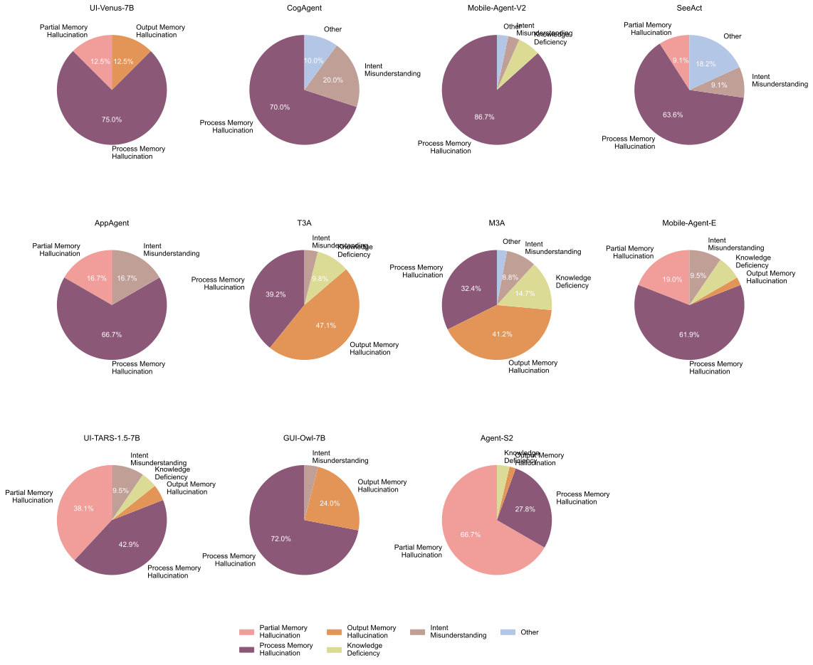
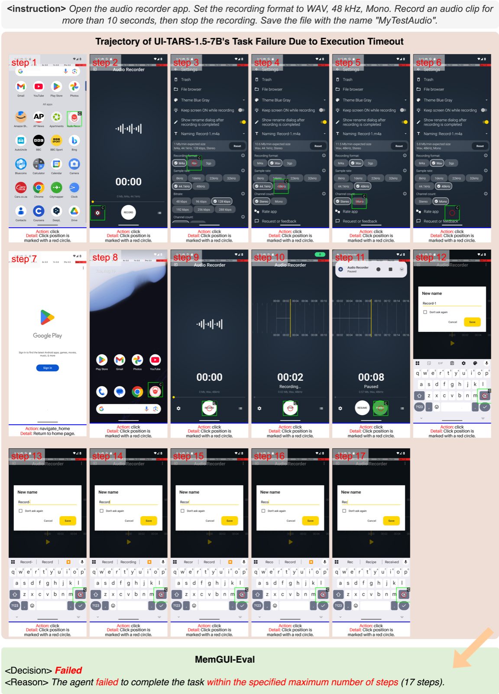
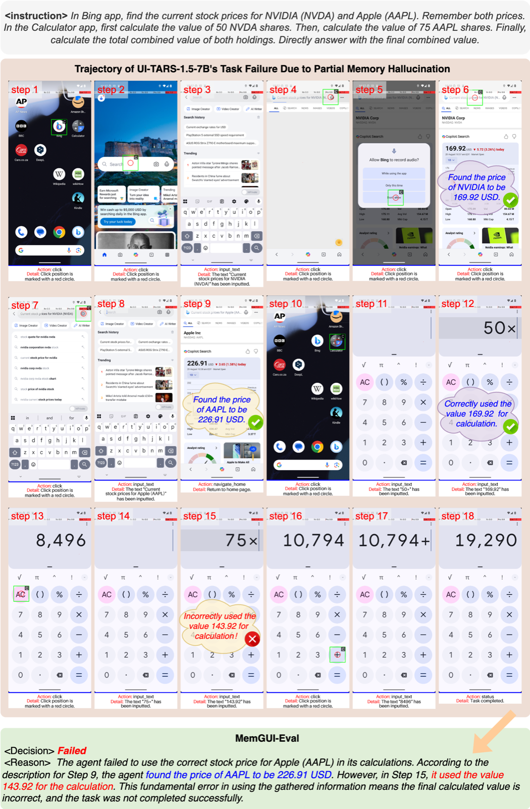
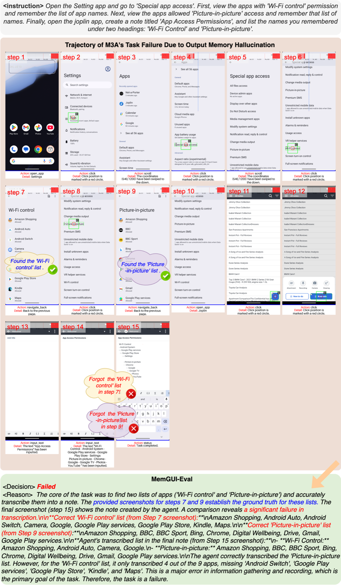
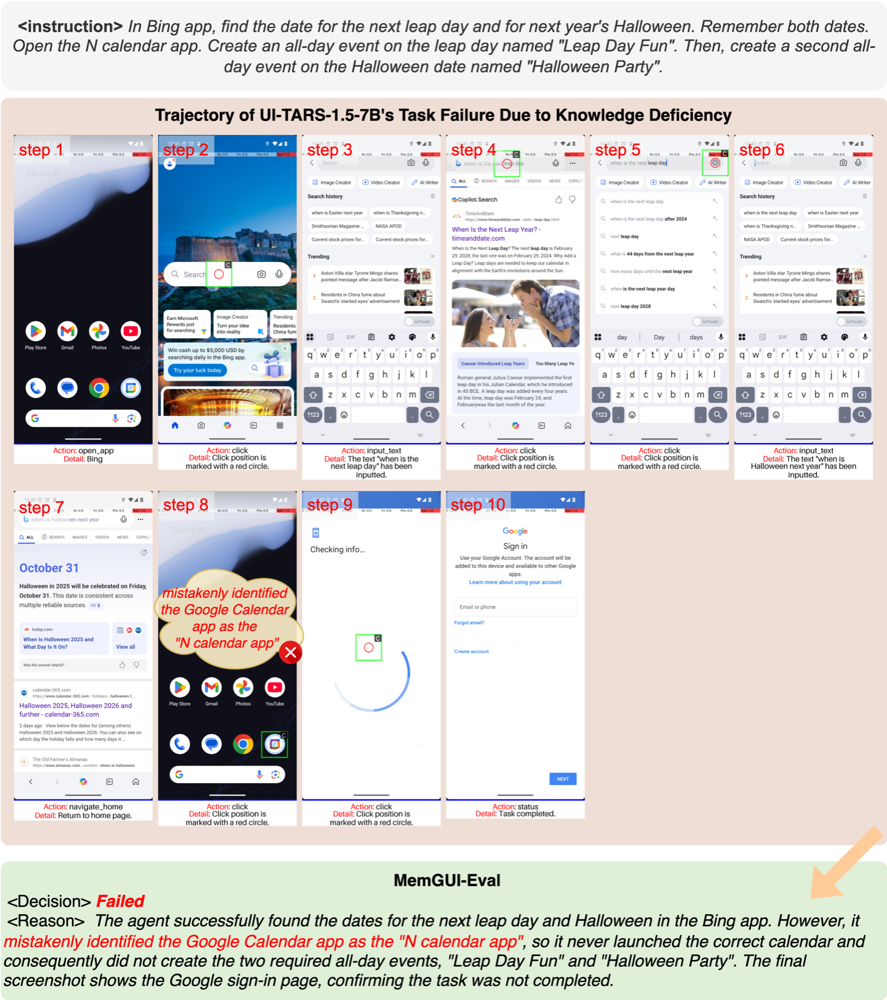
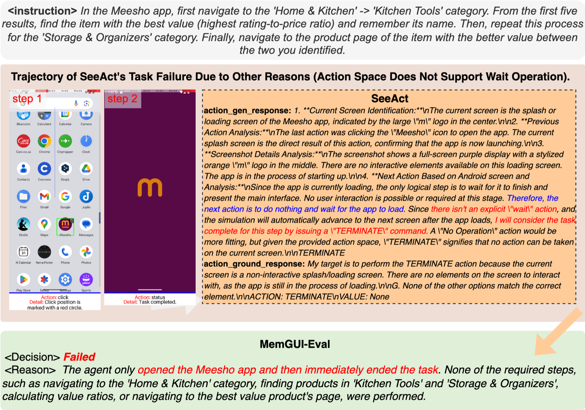

Failure Pattern Overview
Execution timeout accounts for 72.3% of failures across 1,265 task executions, with individual agent timeout rates ranging from 22.6% (Agent-S2) to 93.9% (AppAgent). Among non-timeout failures (343 cases), memory hallucination dominates at 58.9% on average, confirming that memory limitations represent the primary bottleneck for current GUI agents. The systematic prevalence of execution timeouts indicates that agents struggle to maintain task coherence and efficient exploration strategies over extended interaction sequences.
{kind=link}

Failure Type Distributions
Failure type distributions for each GUI agent among non-timeout failures.
Failure Mode Categories
We identified 7 distinct failure modes through systematic analysis of failed trajectories. Each category reveals specific architectural limitations and provides actionable design implications.
Execution Timeout
72.3% of all failuresAgents exhaust the maximum allowed steps without completing the task. This indicates poor task decomposition, inefficient exploration, or inability to recognize dead-ends.
{kind=link}

Execution Timeout Example
Representative trajectory showing an agent failing to complete the task within the step limit.
Partial Memory Hallucination
Agents correctly recall some information units but fabricate or confuse others. This reveals partial memory retention with contamination from irrelevant context.
{kind=link}

Partial Memory Hallucination Example
Agent correctly remembers some details but hallucinates others, showing inconsistent memory fidelity.
Process Memory Hallucination
Agents confuse or misremember the procedural steps taken during task execution, leading to redundant actions or skipping critical steps.
{kind=link}
Output Memory Hallucination
Agents produce outputs that don't match the information they observed, indicating corruption during the retrieval or generation phase.
{kind=link}

Output Memory Hallucination Example
Agent's output doesn't match the information that was correctly observed and stored.
Knowledge Deficiency
Agents lack the domain knowledge or application-specific understanding required to complete the task, such as not knowing how to navigate specific app interfaces.
{kind=link}

Knowledge Deficiency Example
Agent fails due to lack of understanding of application-specific features or workflows.
Intent Misunderstanding
Agents misinterpret the task goal or user intent, leading to correct execution of the wrong task.
{kind=link}
Other Failures
Miscellaneous failures including technical errors, environment issues, and edge cases that don't fit the above categories.
{kind=link}

Other Failure Example
Miscellaneous failure cases including technical and environmental issues.
Design Implications
Multi-Granularity Memory Buffers
Implement hierarchical memory with separate stores for procedural knowledge and factual information to reduce cross-contamination.
Hierarchical Task Decomposition
Develop persistent goal tracking with hierarchical planning to mitigate process memory hallucination across application boundaries.
Strategic Long-Context Utilization
Leverage long-context capabilities beyond naive conversation history concatenation for memory management.
Explicit Long-Term Memory
Implement dedicated cross-session memory mechanisms for experience accumulation (Agent-S2 achieves 21.5% FRR vs 0.8-4.4% without).
Hybrid Architectures
Combine framework-level memory management with efficient end-to-end models to balance capability and computational cost.